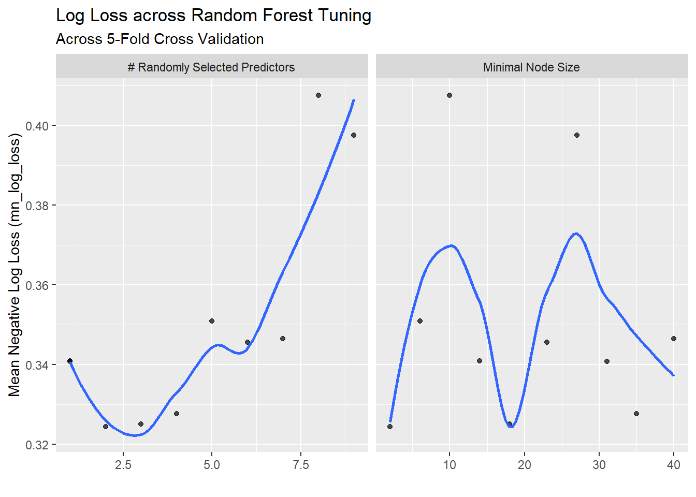

# The libraries and data frame are housed in helper.R file.
source("helper.R")
# The data set has been re-read in, under the name `df`
# Data will be split 70/30 to training and test sets.
split <- initial_split(data=df, prop=0.7, strata=Diabetes_binary)
train <- training(split)
test <- testing(split)ST558 Project 3 - Modeling
Modeling
This exploratory analysis will be performed on the Diabetes Health Indicators Data set, available from kaggle.com. (Click here for more information) This is a data set of survey responses to a questionnaire distributed by the CDC. Including the response variable Diabetes_binary, there are 21 additional predictor variables recorded; however, this analysis will review the following variables:
| Variable | Description of Variable |
|---|---|
Diabetes_binary |
The status of diabetes for the respondent. Levels: Not Diabetic, Diabetic or Pre-Diabetic |
HighChol |
Indicator variable for high cholesterol. Levels: Yes, No |
BMI |
Recorded Body Mass Indices for individuals. |
HeartDiseaseorAttack |
Indicator variable for whether or not someone has had coronary heart disease (CHD) or myocardial infarction (MI). Levels: Yes, No |
PhysActivity |
Indicator variable capturing if someone has performed physical activity outside of their job within the last 30 days or not. Levels: Some, None |
GenHlth |
A categorical variable self-assessing general level of health. Levels: Excellent, Very Good, Good, Fair, Poor |
PhysHlth |
The number of days (within the last 30) of any physical injury or illness. Response: Any number between 0 and 30, inclusive. |
DiffWalk |
An indicator variable recording any difficulty walking or or climbing up stairs. Levels: Yes, No |
Sex |
The sex of the respondent. Levels: Male, Female |
Age |
Five-year ranges of ages, into which the respondent is categorized. Levels: 18-24, 25-29, 30-34, 35-39, 40-44, 45-49, 50-54, 55-59, 60-64, 65-69, 70-74, 75-79, 80+, or Not given. |
In order to perform modeling on this data set, this will be split into a 70/30 training and a test data sets, stratified on the Diabetic_binary indicator variable.
The models will be evaluated using log-loss with 5-fold cross-validation. The model will be selected on the basis of lowest log-loss.
train_5fold <- vfold_cv(train, v=5, strata=Diabetes_binary)Classification Tree
A classification tree is a means of modeling a classification task, to predict which category (class) a predicted value should be sorted into. The data set is split iteratively, beginning with the Root node (entire data set), with rules at each level (decision nodes) to maximize homogeneity of the child nodes.
# Generate a grid for tuning
treeGrid <- grid_regular(cost_complexity(), tree_depth(), min_n(), levels = 5)
# Establish the Classification Tree engine
treeEngine <- decision_tree(
cost_complexity=tune(),
tree_depth=tune(),
min_n=tune()
) |>
set_engine("rpart") |>
set_mode("classification")
# Generate the Workflow object
treeWkfl <- workflow() |>
add_model(treeEngine) |>
add_formula(Diabetes_binary ~ .)
# Now tuning the model
treeTuned <- treeWkfl |>
tune_grid(resamples=train_5fold,
grid=treeGrid,
metrics=metric_set(mn_log_loss))
# The best result
treeTuned |> show_best(metric="mn_log_loss", n=1)# A tibble: 1 × 9
cost_complexity tree_depth min_n .metric .estimator mean n std_err
<dbl> <int> <int> <chr> <chr> <dbl> <int> <dbl>
1 0.0000000001 11 30 mn_log_loss binary 0.333 5 0.000579
# ℹ 1 more variable: .config <chr># And the Workflow with the best parameters:
treeBest <- treeWkfl |>
finalize_workflow(treeTuned |> select_best(metric="mn_log_loss"))
# Finally, evaluate this optimized model on the entire Training set, and apply to predictions to the Test set.
treeFinal <- treeBest |>
fit(data=train) |>
extract_fit_engine()
# The plot for the classification tree
library(rpart.plot)Loading required package: rpart
Attaching package: 'rpart'The following object is masked from 'package:dials':
prunerpart.plot(treeFinal, roundint=FALSE, type=1, extra=1, tweak=1.2, main="Optimized Classification Tree")Warning: labs do not fit even at cex 0.15, there may be some overplotting
# Additionally collect the metrics from the model run on the Test set
treeMets <- treeBest |>
last_fit(split, metrics=metric_set(mn_log_loss)) |>
collect_metrics()
treeMets# A tibble: 1 × 4
.metric .estimator .estimate .config
<chr> <chr> <dbl> <chr>
1 mn_log_loss binary 0.330 pre0_mod0_post0Random Forest
A Random Forest model is a non-parametric learning method that can be used for classification modeling. It works by building a large number of individual, high-variance decision trees on bootstrap samples of the training data. The bootstrap samples are made by taking samples (with replacement) of the training data. At each node split during the construction of these trees, a random subset of predictors is considered. This combination of bagging (sampling data) and feature randomness (sampling features) ensures that the resulting trees are highly uncorrelated. For a categorical prediction task (classification), the final output is determined by majority voting, where the category chosen by the most individual trees becomes the forest’s final prediction, effectively reducing the model’s overall variance and leading to high accuracy and robustness against overfitting.
# Utilize the same `split`, `train`, `test`, and `train_5fold` variables as above.
library(ranger)Warning: package 'ranger' was built under R version 4.3.3rfEngine <- rand_forest(
mtry=tune(),
min_n=tune(),
trees=100
) |>
set_engine("ranger", importance="impurity") |>
set_mode("classification")
# Generate the workflow based on the RF engine specified above
rfWkfl <- workflow() |>
add_model(rfEngine) |>
add_formula(Diabetes_binary ~ .)
# Perform tuning. The seed was already set above.
rfTuned <- rfWkfl |>
tune_grid(resamples=train_5fold,
metrics=metric_set(mn_log_loss),
control=control_grid(save_pred=TRUE)
)i Creating pre-processing data to finalize 1 unknown parameter: "mtry"# The top performing models based on log-loss
rfTuned |> show_best(metric="mn_log_loss", n=5)# A tibble: 5 × 8
mtry min_n .metric .estimator mean n std_err .config
<int> <int> <chr> <chr> <dbl> <int> <dbl> <chr>
1 2 2 mn_log_loss binary 0.324 5 0.000609 pre0_mod03_post0
2 3 18 mn_log_loss binary 0.325 5 0.000643 pre0_mod04_post0
3 4 35 mn_log_loss binary 0.328 5 0.000710 pre0_mod05_post0
4 1 31 mn_log_loss binary 0.341 5 0.000246 pre0_mod02_post0
5 1 14 mn_log_loss binary 0.341 5 0.000834 pre0_mod01_post0# And the Workflow with the best parameters:
rfBest <- rfWkfl |>
finalize_workflow(rfTuned |> select_best(metric="mn_log_loss"))
# Finally, evaluate this optimized model on the entire Training set, and apply to predictions to the Test set.
rfFinal <- rfBest |>
fit(data=train) |>
extract_fit_engine()
# Demonstration of the change in mn_log_loss across different tuning parameters
rfTuned |>
autoplot() +
geom_smooth(se=FALSE) +
labs(title="Log Loss across Random Forest Tuning",
subtitle="Across 5-Fold Cross Validation",
y="Mean Negative Log Loss (mn_log_loss)")`geom_smooth()` using method = 'loess' and formula = 'y ~ x'
# Collect the metrics from the model run on the Test set
rfMets <- rfBest |>
last_fit(split, metrics=metric_set(mn_log_loss)) |>
collect_metrics()
rfMets# A tibble: 1 × 4
.metric .estimator .estimate .config
<chr> <chr> <dbl> <chr>
1 mn_log_loss binary 0.322 pre0_mod0_post0Final Model Selection
Now that the two models have been completed, the mn_log_loss variable can be compare to show which model is a better fit for predicting the data.
Model mn_log_loss
1 Classification Tree 0.3295410
2 Random Forest 0.3215061The metrics indicate here that the Random Forest model produces less loss of fidelity, and has more predictive power than the Classification Tree model. The optimum tuning parameters, taken from above, are
rfTuned |> select_best(metric="mn_log_loss")# A tibble: 1 × 3
mtry min_n .config
<int> <int> <chr>
1 2 2 pre0_mod03_post0# Saving the `split` and `rfBest` variables for use with the API.
saveRDS(split, "split.rds")
saveRDS(rfBest, "rfBest.rds")